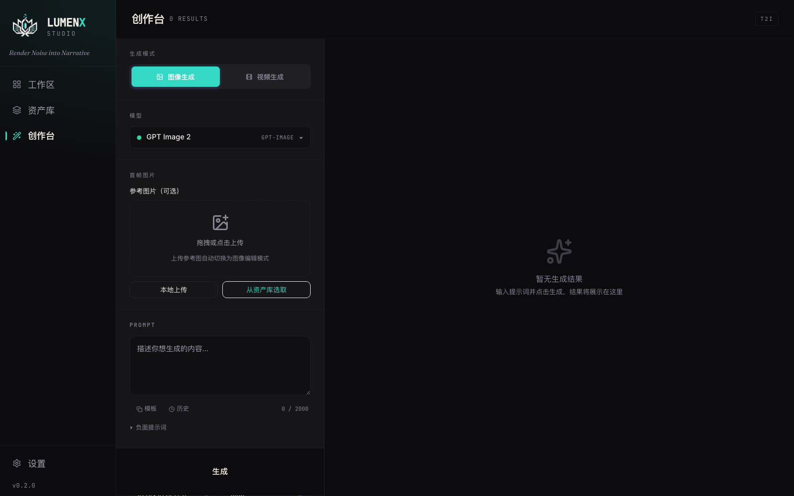
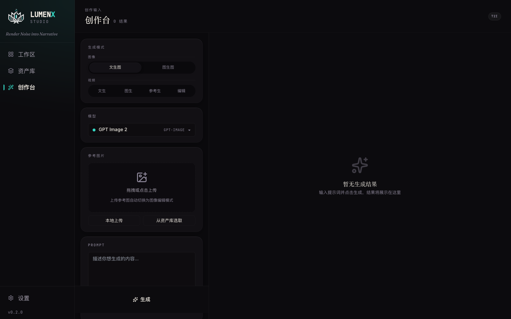

同一页面、同一空结果态截图(1600×1000)。左/旧 = 重皮前;右/新 = Line B「Luminous Atelier」最新版(含生成按钮 / 弹窗 / DetailPanel 精修)。注:new.png 为静态空态,生成按钮在空 prompt 下为禁用暗态——亮态与各交互态见下方「本次最新精修」。


点上面的按钮在原位翻转 · 或按 空格 切换。
rounded-xl 方角、无图标、自加 brightness/scale(自行发挥)↓现在 全圆角胶囊 + ✨ 图标 + 深墨字 + 常驻 teal glow(.btn-primary 1:1)bg-black/60 黑罩,像接管式弹窗盖住工作区↓现在 右侧轻量抽屉,工作区不再被遮黑(保留原右侧设计)bg-primary text-on-accent,同设置页)保留功能:筛选(全部/图片/视频)· grid/gallery 双视图 · 时间分组 · DetailPanel · 骨架/失败卡 全部保留 —— 只换皮、未砍能力。 | ✓ 已完成:DetailPanel / GalleryView / 模板·历史·素材弹窗 全部 Line B + 中英文;全目录 sweep 0 残留(CJK / 紫粉 / teal-底-浅字)。